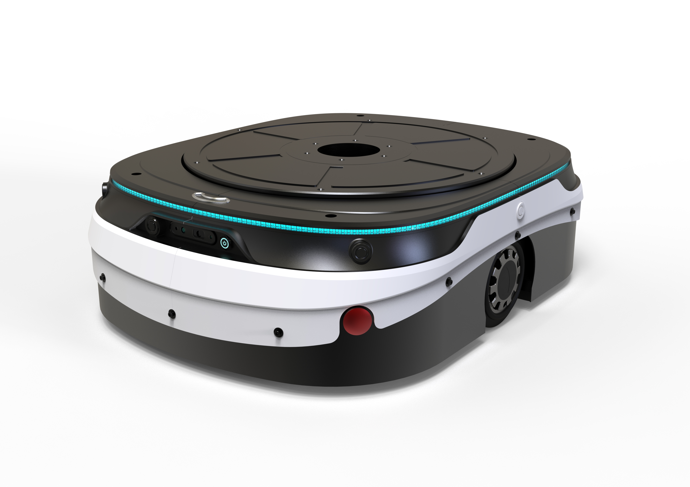
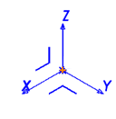
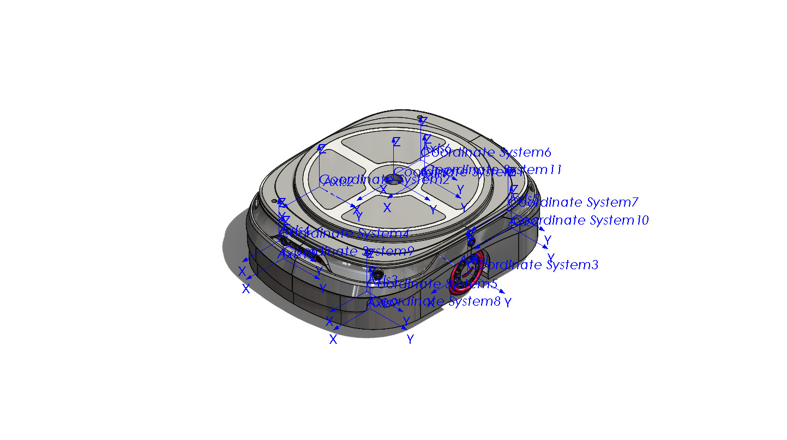
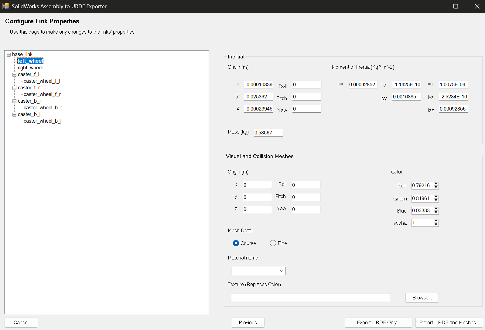
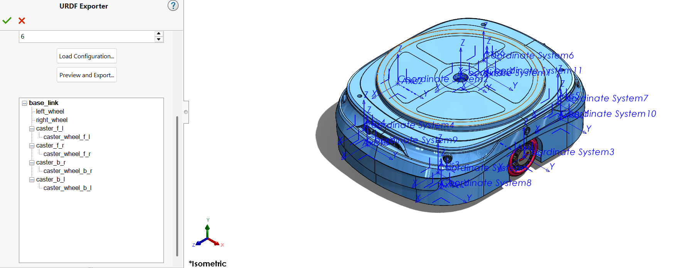
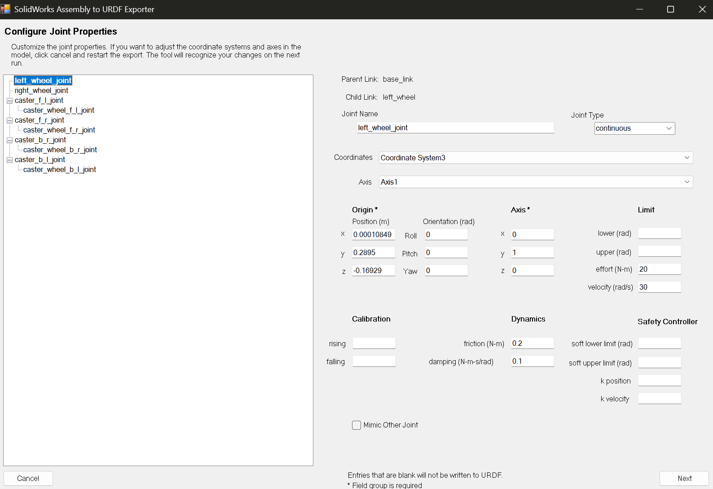
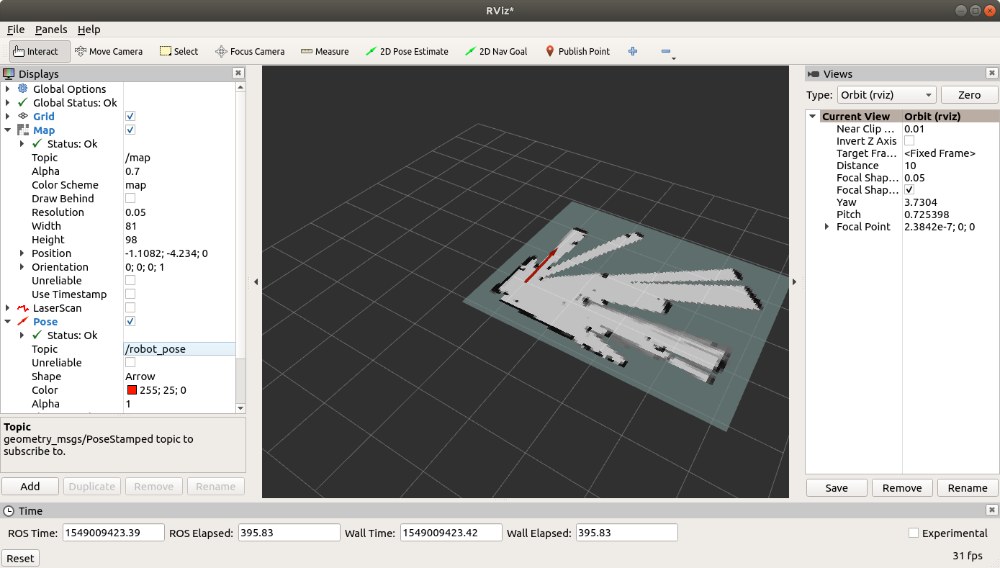

Before anything else, build a mental picture. What you learn in this appendix follows exactly this path: a real mobile robot, designed on paper and in SolidWorks, gets translated step by step into a language ROS 2 can understand.

A common mistake is to assume SolidWorks connects directly and live to ROS 2. It doesn't work that way. The real path is a multi-stage pipeline: you prepare a mechanical assembly in SolidWorks, an add-in (the Exporter) converts it into URDF and Mesh files, and then you place those files inside a normal ROS 2 package — exactly what you learned in Chapter 4 about the structure of ARCHO's body URDF.
The goal of this appendix is simply to get ARCHO's mechanical model into a URDF that ROS 2 can understand and to see it displayed correctly in RViz. Once the model looks right in RViz, we move on to Gazebo and ros2_control (Chapters 7 and 8) — not before.
SolidWorks is a mechanical translator, not a live driver. Its job is to translate the geometry, mass, and relative motion of the parts into URDF, once. After that, ROS 2 has nothing more to do with SolidWorks.
URDF stands for Unified Robot Description Format: a text-based XML file that tells ROS what parts the robot is made of, which part is connected to which, where the joints are, what the rotation or motion axis of each joint is, what the mass and center of mass of each part is, and what the visual appearance and physical collision shape of the parts look like.
Link = a rigid body (an independent physical part)
Joint = the connection between two Links that defines their relative motion
For example, the Link tree of ARCHO — the same two-wheeled robot introduced in Chapter 1 — looks like this:
And every connection is defined by an independent Joint:
base_link
├── left_wheel_joint → left_wheel_link
├── right_wheel_joint → right_wheel_link
├── lidar_joint → lidar_link
└── camera_joint → camera_linkBefore opening the Exporter, take a step back. SolidWorks tells you "this part is the chassis, this is the wheel, this is the bolt, this is the motor, this is the gearbox, this is the spring..." — that is, it sees the assembly in terms of part count. But ROS never asks "how many parts do you have?" ROS only has one question:
Which things move together like a single rigid body, and what motions exist between these bodies?
Link = rigid body — Joint = the motion relationship between two rigid bodies.
Never go straight into the URDF Exporter. First ask yourself: what stays fixed? What rotates? What moves up and down? What moves as one unit with something else?
For example, consider a simple robot with a chassis, motor, gearbox, shaft, wheel, and camera. Suppose the motor and gearbox housing are bolted together, the gearbox output shaft rotates, the wheel is locked onto the shaft, and the camera is fixed to the body. From ROS's point of view, this is grouped as follows:
Chassis + Camera → one Link (or Fixed Links)
Motor + Gearbox housing → one Link
Shaft + Wheel → one LinkWhy do the shaft and wheel become one Link? Because the shaft doesn't move relative to the wheel — both rotate together.
Whenever you're unsure whether two parts should be one Link or not, just ask: do these two parts move relative to each other? If the answer is "no," they can probably be one Link.
For example, Wheel + Hub + Shaft, if all locked together, become one wheel_link. But Wheel and Gearbox Housing move relative to each other, so they cannot be one Link.
A Joint is not a physical part. wheel_joint, arm_joint, suspension_joint,
and camera_joint are none of them parts in SolidWorks; a Joint only says "how does this Link
move relative to that Link." For example:
gearbox_link
↓ wheel_joint
wheel_linkMeaning wheel_link rotates relative to gearbox_link.
| Type | Motion | Example |
|---|---|---|
fixed | No motion at all | A camera bolted to the chassis: base_link ↓fixed camera_link |
continuous | Unlimited rotation | Wheels, motors, rotating shafts: gearbox_link ↓continuous wheel_link |
revolute | Limited rotation | An arm joint between -90 and +90 degrees: arm_link_1 ↓revolute arm_link_2 |
prismatic | Linear motion | A linear rail, jack, ball screw, or lift: base_link ↓prismatic linear_stage_link |
A spring is not a rigid body — it shortens, lengthens, and deforms; but a standard URDF is built around rigid bodies. So you need to separate two things:
If you want the spring itself to be visible in RViz, create a spring_link and put the
spring's Mesh inside it. But the spring's behavior (the gearbox moving up and down
relative to the chassis) is defined by a separate Joint, e.g.
base_link ↓suspension_joint gearbox_link. The spring's visual model and the motion the
spring produces are two separate things.
Suppose you have a project with a body, a gearbox, and a wheel, and the actual motion is: body ↓suspension gearbox ↓rotation wheel. The conceptual URDF tree (just for understanding the system) looks like this:
base_link
└── suspension_joint
└── gearbox_link
└── wheel_joint
└── wheel_linkInside the SolidWorks URDF Exporter you only build Links; Joints are never separate Nodes in the Tree. The same system above becomes this in the Exporter:
❌ Wrong:
base_link
└── suspension_joint
└── gearbox_link
✅ Correct:
base_link
└── gearbox_linkAnd inside the settings of that same gearbox_link you write: Joint Name: suspension_joint.
Suppose you build this Tree in the Exporter:
base_link
└── gearbox_link
└── wheel_linkWhen you click on gearbox_link, you write Link Name: gearbox_link and Joint Name: suspension_joint. From these two lines alone, the Exporter understands Parent = base_link, Child = gearbox_link, Joint = suspension_joint. You repeat the same thing on wheel_link with Joint Name: wheel_joint and Joint Type: Continuous so the Exporter understands gearbox_link ↓wheel_joint wheel_link.
Every Link needs to know which SolidWorks parts belong to it. For example, gearbox_link might
contain Gearbox_Housing.SLDPRT, Motor_Housing.SLDPRT, and
Motor_Bracket.SLDPRT — since these three parts don't move relative to each other, you assign
them all to the same Link. Likewise, for wheel_link you might assign
Wheel.SLDPRT, Hub.SLDPRT, and Output_Shaft.SLDPRT.
Every URDF must have exactly one root — usually base_link — meaning everything eventually connects to it:
base_link
├── left_wheel_link
├── right_wheel_link
├── lidar_link
├── camera_link
└── arm_linkIf camera_link isn't connected to anything, the URDF will have two independent roots — the same Two root links found error we saw in the common errors table.
Establish a consistent naming convention from the start — it's not mandatory, but it's extremely useful:
Link → ends in _link (base_link, left_wheel_link, gearbox_link, camera_link, lidar_link)
Joint → ends in _joint (left_wheel_joint, camera_joint, suspension_joint)And don't reuse names — no two Links with the same name, no two Joints with the same name. The only exception is base_link itself, which, being the Root, has no Joint at all (its Joint Name stays empty); every other Link must have a Joint Name.
If a Joint is movable, ROS needs to know which axis it moves around: 1 0 0 for X,
0 1 0 for Y, 0 0 1 for Z. If a wheel shaft runs along Y,
axis = 0 1 0 — but never assume out of habit that "a wheel is always the Y axis"; you must
look at the actual model. As mentioned in the coordinate system section of this appendix, ROS prefers
X = Forward, Y = Left, Z = Up, so before exporting, build a
ROS_Coordinate_System in SolidWorks and put the origin somewhere logical, such as the center
of the chassis or the center of the wheel axis.
Suppose you have a new project with a Body, Motor, Gearbox, Output Shaft, Wheel, and Camera. The actual motion is: the Body is fixed relative to the Motor+Gearbox, the Motor/Gearbox rotates relative to the Output Shaft+Wheel, and the Body is fixed relative to the Camera. So the Links become:
base_link
gearbox_link
wheel_link
camera_linkAnd the actual tree inside the SolidWorks Exporter:
base_link
├── gearbox_link
│ └── wheel_link
└── camera_linkWith the following settings on each Child Link:
gearbox_link → Joint Name: gearbox_mount_joint | Joint Type: Fixed
wheel_link → Joint Name: wheel_joint | Joint Type: Continuous
camera_link → Joint Name: camera_joint | Joint Type: Fixedbase_link is exactly one and has no Joint1. Link = rigid body.
2. Joint = motion between two Links.
3. Parts that don't move relative to each other → one Link.
4. Inside the SolidWorks Exporter, the Tree is built only from Links.
5. Each Child Link's Joint is defined within that Child Link's settings — not as a separate Node.
And the overall thought process for every new project should follow this same path:
CAD parts
↓
Which parts move together?
↓
Rigid Body Groups
↓
Links
↓
Motion between Links
↓
Joints
↓
Conceptual URDF Tree
↓
SolidWorks Tree = Links Only
↓
Assign Components
↓
Configure Joint on Child Link
↓
Preview
↓
Export URDF
↓
ROS 2 validationThis is exactly the logic we apply, step by step, on the real ARCHO example, throughout the rest of this appendix.
This is the most important part of the whole job. Most URDF problems don't come from the Exporter itself; they come from a messy SolidWorks assembly.
Any part that is supposed to move relative to another part must be an independent Link. Parts that never move relative to each other don't need separate Links.
Suppose ARCHO's chassis assembly has these parts: chassis, cover, battery, electronics board, brackets, left wheel, right wheel, caster wheel, LiDAR, and camera. Since the chassis, cover, battery, board, and brackets never move relative to each other, they all become part of a single Link:
base_link
├── chassis
├── cover
├── battery
├── electronics
└── bracketsBut the wheels and sensors need independent Links:
left_wheel_link
right_wheel_link
caster_link
lidar_link
camera_linkThe suggested assembly structure in SolidWorks looks roughly like this:
archo_assembly.SLDASM
│
├── base_subassembly.SLDASM
│ ├── chassis.SLDPRT
│ ├── top_cover.SLDPRT
│ ├── battery.SLDPRT
│ ├── motor_mount_left.SLDPRT
│ └── motor_mount_right.SLDPRT
│
├── left_wheel.SLDPRT
├── right_wheel.SLDPRT
├── caster.SLDPRT
├── lidar.SLDPRT
└── camera.SLDPRTIn SolidWorks, the main chassis must be Fixed. Right-click the chassis in the FeatureManager and select:
Right Click → FixYou should see an (f) marker next to the chassis, e.g. (f) base_chassis. The wheels must not be Fixed — if they are, right-click them and select Float. The correct structure looks like this:
(f) base_chassis
(-) left_wheel
(-) right_wheel
(-) casterThe Exporter uses the assembly structure, Mates, and your selections to build the Joints. Every wheel needs at least these two Mates:
Mate → ConcentricMate → Coincident or Mate → Distance
The Lock Rotation option must not be enabled, otherwise the wheel won't be able to rotate
in the exported URDF. To test, rotate the wheel with the mouse — if it turns freely about its own axis,
the Mate is defined correctly. Do this for both wheels (left and right).
ROS uses a standard coordinate convention: X forward, Y left, Z up.
Top view:
+X
front of robot
↑
|
+Y ← [ ARCHO ] → -Y
|
↓
-X
Side view:
+Z
↑
|
|
└────→ +XIf your SolidWorks model's coordinate system doesn't match this convention, ARCHO may appear lying down, upside down, or facing the wrong direction in RViz, or the wheels may rotate about the wrong axis.
To fix this at the root, build a dedicated coordinate system in SolidWorks:
Insert
→ Reference Geometry
→ Coordinate SystemName it, for example, ROS_Coordinate_System and set the axes like this:
X = Forward
Y = Left
Z = Up
Preferably place the origin at one of these points: the geometric center of the chassis, the midpoint between the two wheel axes, on the ground plane below the robot's center, or the center of the base plate.
In a real assembly, you typically repeat this not just once, but for every Link and every Joint separately — a Coordinate System for the chassis, one for each wheel, one for each Caster. The result ends up looking like this: dozens of small Triads, each sitting exactly where a Joint will later be located:

For a mobile robot, a more professional structure uses two Links: base_footprint, which
sits on the ground, and base_link, which sits at the physical center of the chassis. For
the first export, it's enough to have just base_link; we'll add
base_footprint to the URDF by hand later — just as we discussed in Chapter 5 (TF2) about
the tree of coordinate frames.
A URDF isn't just a 3D picture; for physical simulation it also needs dynamic properties. SolidWorks can compute mass, center of mass, moments of inertia, and the inertia tensor from each part's Material and geometry.
For every part or Subassembly, define a real Material:
Right Click on Material
→ Edit MaterialFor example Aluminum 6061, ABS, Steel, or Rubber — whichever is closest to the real part. Then check:
Evaluate
→ Mass PropertiesYou should see sensible numbers for Mass, Center of Mass, Principal Axes, and Moments of Inertia. The Exporter can transfer this information directly into the <inertial> tag in URDF.
If a Material isn't defined, or the mass is computed incorrectly, the robot may fly off in Gazebo, the wheels may jitter, the model may sink into the ground, the simulation may become unstable, or ARCHO may tip over from a small contact. This is exactly the class of errors we discussed in Chapter 7 (Gazebo) regarding the importance of Inertia.
After you've defined all the Joints, the Exporter shows you one more page: Configure Link Properties. This is no longer about motion; it's about how heavy each Link is, where its mass is concentrated, and what color we see it in.

left_wheel — the top section (Inertial) is computed directly from the CAD, the bottom section (Visual and Collision Meshes) determines the Link's appearance and physical behaviorThis page has two main sections; let's go through each one separately.
If you've defined the Material correctly, the Exporter pulls these numbers straight from the CAD — you no longer need to guess:
| Field | What it means |
|---|---|
| Mass (kg) | The Link's actual mass, computed from the volume and Density of the chosen material — not an assumed number. |
| Inertial Origin (x, y, z) | The location of the Center of Mass relative to the Link's frame. It doesn't need to sit exactly at zero — for example, x=-0.0001, y=-0.025, z=0 is perfectly normal. |
| Moment of Inertia — ixx, iyy, izz | The body's resistance to rotation about each of the three principal axes, in kg·m². |
| Moment of Inertia — ixy, ixz, iyz | The cross-coupling terms of the inertia tensor; for nearly symmetric bodies these are usually very small numbers. |
These six numbers together form the Link's inertia matrix and go directly into the <inertial> tag in URDF — the same tag we'll see again a few lines later in the full sample URDF.
| Field | What it means |
|---|---|
| Origin (m) / Roll-Pitch-Yaw | If the Mesh isn't exactly at the Link's origin, this is where you enter the needed offset and rotation. |
| Mesh Detail — Coarse | Fewer triangles → smaller file, faster loading, less computational load for RViz and Gazebo. |
| Mesh Detail — Fine | More triangles → more accurate appearance, but a larger and heavier file. For most ROS projects, Fine doesn't offer a noticeable benefit. |
| Color — Red / Green / Blue | The Visual Mesh color, each a number between 0 and 1. |
| Color — Alpha | Transparency level: 1 means fully opaque, 0 means fully transparent. |
| Material name | A name that can be shared across multiple Links, e.g. wheel_rubber or black_plastic, so the color is defined once and reused everywhere. |
This page builds both a Visual and a Collision entry for each Link — and the same rule we look at in more detail a few pages later applies here too: a precise Mesh is good for Visual, but for Collision it's better to use a simple Box or Cylinder so that Gazebo doesn't have to compute collisions against thousands of tiny triangles.
The classic, well-known tool is the SolidWorks to URDF Exporter project from the ROS organization. This tool converts a SolidWorks assembly into URDF, Mesh files, and the initial structure of a ROS package.
After installing the Exporter:
Tools → Add-Ins.SolidWorks to URDF Exporter option.Active Add-ins and Start Up checkboxes.After this step, the Export command should appear at the bottom of the Tools menu: Tools → Export as URDF.
Check that SolidWorks was closed during installation, that you ran the Installer with
Run as administrator, that the Exporter version is compatible with your SolidWorks version,
that Windows hasn't blocked the DLL file, and that you restarted SolidWorks after installation.
For newer SolidWorks versions, a newer tool called sw2robot has also been introduced,
which works as a Standalone tool using COM, analyzes Mates, and has a browser-based editor for adjusting
axes, Joint Limits, and Collision. This tool can be a good replacement in versions where the classic
Add-in has issues. That said, this appendix's teaching path uses the classic Exporter, because you
should understand the resulting URDF structure by hand — exactly what you learned in raw form in
Chapter 4.
Open ARCHO's main assembly and go to Tools → Export as URDF. A URDF Exporter window opens with an empty tree on the left — the place where Links will appear one by one. To know where you're headed, first look at a real example of a completed tree:

base_link at the root, two drive wheels, and four Casters, each with its own sub-Link for its small wheel — exactly what we'll build step by step a few lines from nowWhen you expand each row of this tree, the Exporter shows you two small buttons: one for adding a new child Link, and one for defining Components (which SolidWorks parts belong inside this Link). We now go through this process step by step for ARCHO.
The first Link must be the robot's base part: base_link. Select all the fixed chassis parts for it — the body, cover, fixed brackets, battery, computer, electronics boards, and any motors that have a fixed housing.
In the Exporter, enter the Link name precisely and without spaces; use only lowercase English letters, digits, and underscores:
| Bad name | Good name |
|---|---|
| Base Link | base_link |
| Main Body | chassis |
| Robot Chassis 1 | base_link |
| Main Chassis (in another language) | base_link |
Create a Child Link for base_link named left_wheel_link and set:
Parent Link: base_link
Child Link: left_wheel_link
Joint Name: left_wheel_jointYou have two common choices for the Joint type:
| Joint type | Use case |
|---|---|
continuous | A wheel that can rotate without limit — the right choice for ARCHO's drive wheels |
revolute | A joint that only rotates within a range, e.g. a robot arm between -90 and +90 degrees |
For ARCHO's wheel, select Joint Type: Continuous.
In ROS, a Joint's axis is specified by a three-component vector, e.g. <axis xyz="0 1 0"/>.
Three common cases: 1 0 0 for rotation about X, 0 1 0 for rotation about Y,
and 0 0 1 for rotation about Z. For a typical two-wheeled robot whose front faces X, the
wheel shaft axis is usually Y, so <axis xyz="0 1 0"/>. The opposite wheel may need
the reversed direction (0 -1 0) — but first export both with the correct geometric axis;
the motor command direction can also be corrected later in ros2_control.
Define the right wheel exactly like the left one:
Parent Link: base_link
Child Link: right_wheel_link
Joint Name: right_wheel_joint
Joint Type: continuous
Axis: 0 1 0The tree so far looks like this:
base_link
├── left_wheel_joint
│ └── left_wheel_link
└── right_wheel_joint
└── right_wheel_linkWhen you double-click a Joint in the tree, the Exporter takes you to a more detailed page — where you actually define exactly where this joint is, which axis it moves around, and how much power it has. The first time you see this page it can look a bit crowded, but each section answers one simple question:

left_wheel_joint — Parent, Child, Origin, Axis, Limit, Dynamics, and Safety Controller all in one viewLet's read this page like a map, section by section:
| Section | What it means |
|---|---|
| Parent Link / Child Link | The two ends of the Joint — e.g. base_link and left_wheel. This is the same relationship we discussed in the previous section. |
| Joint Name / Joint Type | The Joint's name and its type (fixed / continuous / revolute / prismatic). |
| Coordinates | References the same Coordinate System you built earlier in SolidWorks — the Exporter uses it to compute the Joint's position and orientation relative to the Parent. |
| Axis | The same Reference Axis you built — it says which axis the joint rotates about or which direction it slides along. |
| Origin — Position (m) | The x / y / z coordinates of the Joint's location relative to the Parent, in meters. |
| Origin — Orientation (rad) | Roll / Pitch / Yaw — the rotation of the Joint's frame relative to the Parent, in radians. If you built your Coordinate Systems correctly from the start, this often stays zero. |
| Limit — lower / upper | The minimum and maximum travel of the Joint (radians for rotational, meters for linear). Usually left empty for continuous. |
| Limit — effort | The maximum allowed force or torque on the Joint (N·m for rotational, N for linear) — best taken from the actual motor and gearbox specifications. |
| Limit — velocity | The Joint's maximum speed (rad/s or m/s). For a wheel it can be computed from ω = v / r, where v is the robot's linear speed and r is the wheel radius. |
| Dynamics — friction / damping | The Joint's internal friction and velocity-dependent resistance. These two numbers later make the Joint's behavior in Gazebo softer or stiffer and usually need tuning. |
| Calibration — rising / falling | The Joint's calibration reference; not needed for most simple wheeled robots. |
| Safety Controller | Soft limits (soft lower/upper limit, k position, k velocity) — mostly useful for robotic arms and limited joints; usually left empty for a continuous wheel. |
| Mimic Other Joint | Used when one Joint's motion is a direct function of another Joint — e.g. two fingers of a Gripper that always open and close together. |
If you've built the Coordinate System and Axis correctly in SolidWorks, most fields on this page — especially Origin and Axis — fill in correctly on their own. The reverse is also true: whenever something looks wrong here, it's usually a sign you need to go back and fix the Coordinate System in the earlier step, rather than manually patching the numbers on this page.
If the LiDAR is bolted to the body and doesn't move, you have two options. The first is to keep the LiDAR model inside the chassis Mesh — simple, but you won't have an independent TF frame for the LiDAR later. The second, more professional option is to create an independent Link with a Fixed Joint:
Parent: base_link
Child: lidar_link
Joint: lidar_joint
Type: fixedWhich looks like this in URDF:
<joint name="lidar_joint" type="fixed">
<parent link="base_link"/>
<child link="lidar_link"/>
<origin xyz="0.25 0 0.35" rpy="0 0 0"/>
</joint>Do the same for the camera: camera_link, camera_joint, type fixed. The final Link tree:
base_link
├── left_wheel_link
├── right_wheel_link
├── caster_link
├── lidar_link
└── camera_linkFor initial testing, the simplest and most stable choice is to connect the Caster with a Fixed Joint (caster_joint, type="fixed"). The fully physical model — with two independent motions, caster_swivel_joint and caster_wheel_joint — is more complex in Gazebo and sometimes unstable, so we save it for later.
Every Link usually has two separate geometry models: Visual, which the user sees, and Collision, which the physics engine uses for collisions. Visual can be detailed and beautiful; Collision is better kept simple.
For example, the chassis Visual can be a complex STL:
<visual>
<geometry>
<mesh filename="package://archo_description/meshes/base_link.stl"/>
</geometry>
</visual>But the Collision is better as a simple shape like a Box:
<collision>
<geometry>
<box size="0.60 0.45 0.20"/>
</geometry>
</collision>Because it makes the simulation heavy, causes unstable collisions, makes the robot jitter, forces Gazebo to do more processing, and lets the wheels catch on small body details. Simple rule: precise Visual Mesh, simple Collision Mesh.
The same logic applies to Mesh quality; very high quality increases file size and slows down RViz and Gazebo. For ARCHO, a medium- or good-quality Visual Mesh and a simple or simplified Collision shape is enough.
Pick a simple path on Windows and avoid spaces, non-English characters, or special characters in the path:
| Bad path | Good path |
|---|---|
C:\Users\Pouya\Desktop\my new robot\ | C:\ros_exports\archo_description\ |
Then run Export. The output typically looks like this:
archo_description/
├── CMakeLists.txt
├── package.xml
├── launch/
├── meshes/
│ ├── base_link.STL
│ ├── left_wheel_link.STL
│ ├── right_wheel_link.STL
│ ├── lidar_link.STL
│ └── camera_link.STL
├── textures/
└── urdf/
└── archo.urdfIf your Workspace is ~/ros2_ws and the Windows output is at C:\ros_exports\archo_description, in WSL this path corresponds to /mnt/c/ros_exports/archo_description.
Linux is case-sensitive; base_link.STL and base_link.stl are two completely different files. It's best to lowercase all Meshes:
Then also fix the names inside the URDF from base_link.STL to base_link.stl.
The correct path structure is always package://package_name/folder/file, e.g.
<mesh filename="package://archo_description/meshes/base_link.stl"/>. There should be
no leftover Windows path (C:\Users\...) or absolute Linux path (/home/...) in
the URDF.
cmake_minimum_required(VERSION 3.8)
project(archo_description)
find_package(ament_cmake REQUIRED)
install(
DIRECTORY
launch
meshes
urdf
DESTINATION share/${PROJECT_NAME}
)
ament_package()<?xml version="1.0"?>
<package format="3">
<name>archo_description</name>
<version>0.0.1</version>
<description>
URDF description package for the ARCHO mobile robot.
</description>
<maintainer email="pouya@example.com">
Pouya Mansournia
</maintainer>
<license>Apache-2.0</license>
<buildtool_depend>ament_cmake</buildtool_depend>
<exec_depend>robot_state_publisher</exec_depend>
<exec_depend>joint_state_publisher</exec_depend>
<exec_depend>joint_state_publisher_gui</exec_depend>
<exec_depend>rviz2</exec_depend>
<exec_depend>xacro</exec_depend>
<export>
<build_type>ament_cmake</build_type>
</export>
</package>from pathlib import Path
from ament_index_python.packages import get_package_share_directory
from launch import LaunchDescription
from launch_ros.actions import Node
def generate_launch_description() -> LaunchDescription:
package_name = "archo_description"
urdf_file_name = "archo.urdf"
package_share = Path(get_package_share_directory(package_name))
urdf_path = package_share / "urdf" / urdf_file_name
if not urdf_path.exists():
raise FileNotFoundError(f"URDF file not found: {urdf_path}")
robot_description = urdf_path.read_text(encoding="utf-8")
return LaunchDescription(
[
Node(
package="robot_state_publisher",
executable="robot_state_publisher",
name="robot_state_publisher",
output="screen",
parameters=[{"robot_description": robot_description}],
),
Node(
package="joint_state_publisher_gui",
executable="joint_state_publisher_gui",
name="joint_state_publisher_gui",
output="screen",
),
Node(
package="rviz2",
executable="rviz2",
name="rviz2",
output="screen",
),
]
)The official ROS 2 documentation uses robot_state_publisher to display a URDF; this Node converts the URDF model and Joint states into TF so tools like RViz can show the robot's structure.
Before you even go near a terminal and ROS, there's a faster way to see your result: an
online URDF Viewer
that opens URDF, XACRO, STL, and DAE files via
Drag & Drop right in your browser, showing the 3D model and the initial motion of the Joints. This tool
doesn't replace RViz or Gazebo, but for a quick check — is the robot's orientation correct? Are the
wheels in the right place? Did the Meshes load? — it's great, and it surfaces obvious errors before you
spend the time setting everything up in WSL.
After this quick check, it's time for a more serious review. First check the URDF file before anything else:
Then run:
In RViz: set Fixed Frame to base_link, click Add, and add both the RobotModel and TF displays. If the model is correct, the chassis and wheels appear, the TF tree is complete, and the Joints can be changed using the Joint State Publisher.

If the model isn't visible but there's no error either, check these Topics:
The last command produces a frames.pdf file after a few seconds, which can be opened in Windows from WSL with explorer.exe frames.pdf, and it should show ARCHO's same five-branch tree.
| Error / symptom | Likely cause | Fix |
|---|---|---|
| Two root links found | A Link has no Parent Joint (e.g. camera_link) | Define a <joint type="fixed"> for that Link |
| Could not load resource | Wrong filename casing or wrong package:// path | Carefully check the package name, meshes folder, stl extension, and path |
| The model is far too large | SolidWorks exported in millimeters but URDF reads meters | Add scale="0.001 0.001 0.001" to the mesh tag — only if the Exporter isn't already handling scale itself |
| The model is far too small | Scale applied twice (the STL was already in meters) | Remove the extra scale from the mesh tag |
| The robot appears lying down | The SolidWorks coordinate system doesn't match ROS's X-forward/Y-left/Z-up convention | Preferably fix the Coordinate System in SolidWorks; temporary workaround: rpy="1.5708 0 0" (90 degrees in radians) |
| The wheel is in the wrong place | The origin xyz value in the Joint is wrong | Recheck the order xyz = X Y Z and rpy = Roll Pitch Yaw — all angles are in radians |
| The wheel rotates about the wrong axis | The <axis xyz=".."/> vector is wrong | Match the 1 0 0/0 1 0/0 0 1 axes with the wheel's actual geometry |
| The wheel doesn't rotate at all | The Joint was built as fixed | Change the Joint type to continuous |
| Joint State Publisher shows no Slider for the wheel | continuous Joints have no fixed numeric limit | For a temporary test make it revolute with limit lower="-3.14" upper="3.14", then switch back to continuous |
This sample is only for understanding the structure — the inertias and dimensions (chassis size, wheel radius) are illustrative, do not match the values from Chapter 4, and should not be used directly for the real ARCHO; before use, replace every number with your own robot's actual dimensions:
<?xml version="1.0"?>
<robot name="archo">
<link name="base_link">
<visual>
<geometry>
<mesh filename="package://archo_description/meshes/base_link.stl"/>
</geometry>
</visual>
<collision>
<geometry>
<box size="0.60 0.45 0.20"/>
</geometry>
</collision>
<inertial>
<origin xyz="0 0 0"/>
<mass value="20.0"/>
<inertia
ixx="0.40" ixy="0.0" ixz="0.0"
iyy="0.65" iyz="0.0"
izz="0.80"/>
</inertial>
</link>
<link name="left_wheel_link">
<visual>
<geometry>
<mesh filename="package://archo_description/meshes/left_wheel_link.stl"/>
</geometry>
</visual>
<collision>
<geometry>
<cylinder radius="0.10" length="0.04"/>
</geometry>
</collision>
<inertial>
<mass value="0.8"/>
<inertia
ixx="0.004" ixy="0.0" ixz="0.0"
iyy="0.004" iyz="0.0"
izz="0.007"/>
</inertial>
</link>
<joint name="left_wheel_joint" type="continuous">
<parent link="base_link"/>
<child link="left_wheel_link"/>
<origin xyz="0 0.245 -0.10" rpy="0 0 0"/>
<axis xyz="0 1 0"/>
</joint>
<link name="right_wheel_link">
<visual>
<geometry>
<mesh filename="package://archo_description/meshes/right_wheel_link.stl"/>
</geometry>
</visual>
<collision>
<geometry>
<cylinder radius="0.10" length="0.04"/>
</geometry>
</collision>
<inertial>
<mass value="0.8"/>
<inertia
ixx="0.004" ixy="0.0" ixz="0.0"
iyy="0.004" iyz="0.0"
izz="0.007"/>
</inertial>
</link>
<joint name="right_wheel_joint" type="continuous">
<parent link="base_link"/>
<child link="right_wheel_link"/>
<origin xyz="0 -0.245 -0.10" rpy="0 0 0"/>
<axis xyz="0 1 0"/>
</joint>
</robot>
Exporting from SolidWorks isn't the end of the job; it's a starting point. After exporting, these
refinements are usually needed: fixing up Link and Joint names, converting URDF to Xacro (Chapter 4),
simplifying Collisions, rechecking Inertia, adding base_footprint, adding Sensor Frames,
adding ros2_control (Chapter 8), adding Gazebo plugins (Chapter 7), defining wheel radius and
spacing, and a full test in RViz and then Gazebo before connecting to the real controller.
base_link, left_wheel_link, and right_wheel_link~/ros2_ws/srccheck_urdf
Prepare ARCHO's SolidWorks assembly (or any other robot you have on hand) following the steps in this
appendix, export the URDF, and load it into the archo_description package. Then use
check_urdf and RViz to confirm the model displays without errors and the wheels rotate
about the correct axis. Finally, save the output of view_frames and compare the TF tree
with the tree expected in this appendix.
All of these steps — from preparing the assembly in SolidWorks to exporting the URDF and loading it into a ROS 2 package — are exactly the path implemented in the warehouse-amr-ros2 repository: a warehouse AMR robot whose body and wheels were converted from SolidWorks to URDF using this exact method. If you want to see a complete, real example of this process — not just a teaching example — go check out that repository.
This appendix can be read alongside these official resources:
Official ROS 2 documentation — Building a Movable Robot Model with URDF
ros2_control documentation — Mobile Robot Kinematics
Online URDF Viewer — the same fast Drag & Drop tool introduced in the RViz testing section.
base_link (which sits at the physical center of the chassis).